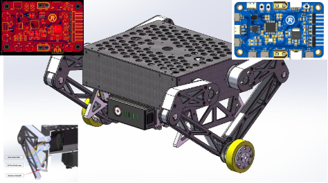
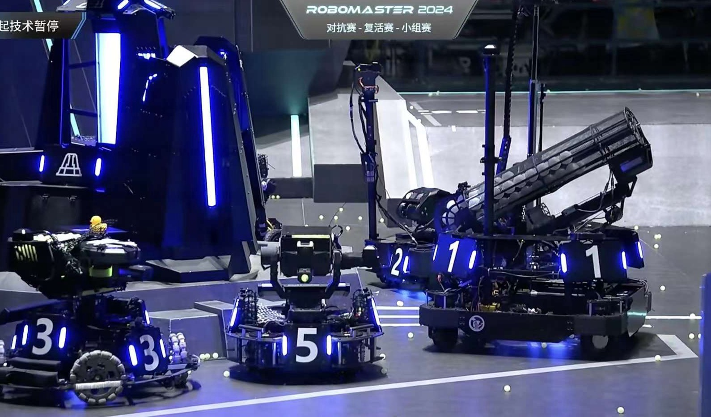
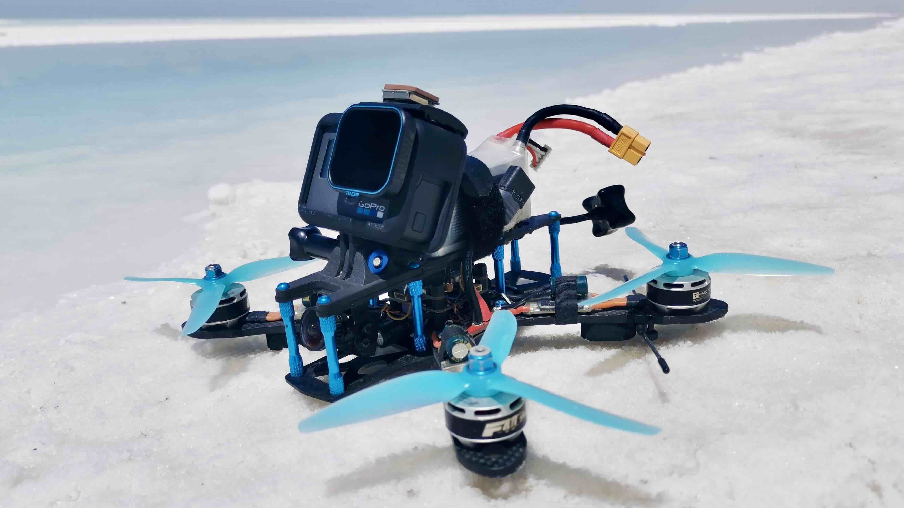

|
Runxuan (Jerry) Wang I'm a first-year robotics master student at University of Pennsylvania. Prior to UPenn, I received my B.S. in Computer Engineering from University of Illinois at Urbana-Champaign. At UIUC, I was an undergraduate research assistant at Robotic Perception, Interaction, and Learning Lab with Prof. Yunzhu Li and Human Centered Autonomy Lab advised by Prof. Katie Driggs-Campbell. My current research interest is in robot learning and perception. My research goal is to bridge the gap of robots between simulation and the real world. At UIUC, I was fortunate to lead the embedded system team of Illini RoboMaster across multiple competitions. |
{kind=link}
Research |
|
|
Sim-to-Real Adaptation with Graph Networks for Granular Objects Scooping Tasks
Kaiwen Hong, Haonan Chen*, Runxuan Wang*, Kaylan Wang*, Mingtong Zhang, Shuijing Liu, Yunzhu Li, Katherine Driggs-Campbell arXiv, 2024 project page / arXiv A GNN-based dynamics model combined with MCTS lets robots efficiently scoop granular objects from containers, bridging the sim-to-real gap by adapting simulation-trained models with minimal real-world data. |
|
|
DRAGON: A Dialogue-Based Robot for Assistive Navigation with Visual Language Grounding
Shuijing Liu, Aamir Hasan, Kaiwen Hong, Runxuan Wang, Peixin Chang, Zachery Mizrachi, Justin Lin, D. Livingston McPherson, Wendy A. Rogers, Katherine Driggs-Campbell IEEE Robotics and Automation Letters (RA-L), 2024 project page / video / code / paper A dialogue-based robot integrates CLIP-powered visual-language grounding with autonomous navigation to assist visually impaired users, guiding them to desired landmarks and providing real-time environmental descriptions through natural, unconstrained speech interactions. |
Projects |
Autonomous "Sentry" Robot for RoboMaster CompetitionIn this project, I developed the complete software stack for an custom omnidirectional robot using ROS and FreeRTOS, enabling smooth navigation across various environments through FAST-LIO SLAM and TEB planner with the aid of a MID360 3D LiDAR. |
|
Navigation through waypoints |
Navigation in "defence" mode |
Dynamically avoiding obstacles |
Wheeled-Legged Balancing Robot - Senior Design "Best Overall Project"In this project, I led the development of a wheeled-legged balancing robot, designing a custom STM32F103 microcontroller board and embedded software, with LQR and VMC-based control for stable locomotion. Project page / Video / Slides / Final Paper |
|

Robot & PCB design |
Robot in action |
Jump! |
Highlight Experiences |
Embedded System Team LeadAs an undergraduate, I led the embedded systems team for Illini RoboMaster, participating in six competitions across the US and China. Our team achieved 2nd place (top 10%) in both the 2022 and 2023 RoboMaster University League North America rounds. |
|

RoboMaster University Championship |
RoboMaster University League NA |
Side Quests |
FPV Drone Racing/CinematographyI've been a hobbyist FPV drone pilot and cinematographer since 2015. I also enjoy filming and editing travel vlogs. Check out my works below! |
|

My drone (that ended up in a lake) |
China Northwest Vlog |

FPV Film of UIUC |
|
Source code borrowed from Jon Barron. |